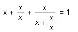

Solve the equation:

On the domain of definition, the equation can be reduced to the form x + 1 + x / $($x + 1$)$ = 1. Multiply both sides of the equation by x + 1. After simplification, we get: $x^2$ + 2x = 0, that is, x = 0 or x = -2. The root of the equation is only x = -2.
-2